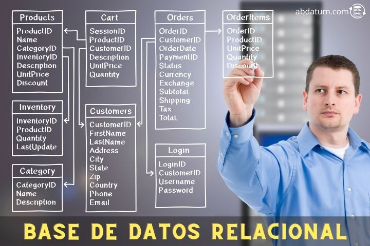

Este es un ejemplo simple de dos tablas que una pequeña empresa puede usar para procesar pedidos de sus productos. La primera tabla es una tabla de información del cliente, por lo que cada registro incluye el nombre, la dirección, información de envío y facturación, el número de teléfono y otra información de contacto del cliente. Cada fragmento de información (cada atributo) está en su propia columna y la base de datos asigna una ID única (una clave) a cada fila. En la segunda tabla, una tabla de pedidos del cliente, cada registro incluye el ID del cliente que realizó el pedido, el producto solicitado, la cantidad, el tamaño y el color seleccionados, etc., pero no el nombre del cliente ni su información de contacto.
Estas dos tablas tienen una sola cosa en común: la columna de ID (la clave). Gracias a esa columna en común, la base de datos relacional puede establecer una relación entre las dos tablas. Entonces, cuando la aplicación de procesamiento de pedidos de la empresa envíe un pedido a la base de datos, la base de datos podrá examinar la tabla de pedidos del cliente, extraer la información correcta sobre el pedido de productos y usar el ID del cliente de esa tabla para buscar la información de facturación y envío del cliente en la tabla de información del cliente. A continuación, el almacén puede extraer el producto correcto, el cliente puede recibir la entrega del pedido a tiempo y la empresa puede obtener el pago.

VENTAJAS Y DESVENTAJAS:
VENTAJAS:
Una de las ventajas clave es la sencillez que obtenemos al trabajar en ella, a que es fácil de crear y muy accesible con la opción de ampliar la base de datos sin perjudicar a las aplicaciones existentes. Con esta forma de trabajar nos garantiza la uniformidad de los datos y sin olvidar que en él no existe la duplicidad de registros, lo que favorece más a la comprensión y la accesibilidad.
Por otro lado, en este tipo de base de datos tenemos la ventaja de la accesibilidad de varios usuarios en una misma base y al mismo tiempo, teniendo en cuenta que también existe la opción de bloquear el acceso durante la actualización de datos con el objetivo de evitar posibles colapsos o conflictos entre usuarios.
El RDBMS presenta una gran capacidad en cuanto a la atomicidad debido a la gestión de reglas y políticas de la empresa que puede llevar a cabo. A esto se le denomina compromiso multifacético. Otro punto a destacar es que el rendimiento de las bases de datos relacionales es muy bueno en cuanto a la gran variedad de herramientas que contiene y presenta una experiencia de usuario rápida.
DESVENTAJAS:
Para empezar, tenemos que tener en cuenta que las empresas tienen un entorno muy dinámico eso quiere decir que el registro de datos presentará muchos movimientos, las cuales deben estar en constante modificación. El caso es que en el momento que crece en volumen los datos, comienza a aumentar el costo en mantenimiento. Si es cierto que las desventajas están muy relacionadas entre sí, ya que, como hemos hablado anteriormente, en el momento que generan un volumen más alto de datos, debemos tener en cuenta que el RDBMS contiene un espacio limitado y esto puede provocar problemas en la empresa.
Anteriormente hemos hablado de su rendimiento, y es cierto que presenta un buen rendimiento en relación a las herramientas que conlleva, sin embargo, presenta un rendimiento bajo en caso de hacer consultas y obtener información debido a la estructura de las tablas separadas. Finalmente, la base de datos relacional es muy fácil de usar, sin embargo, presenta tanta variedad de herramientas que al final resulta ser algo complejo de aprender